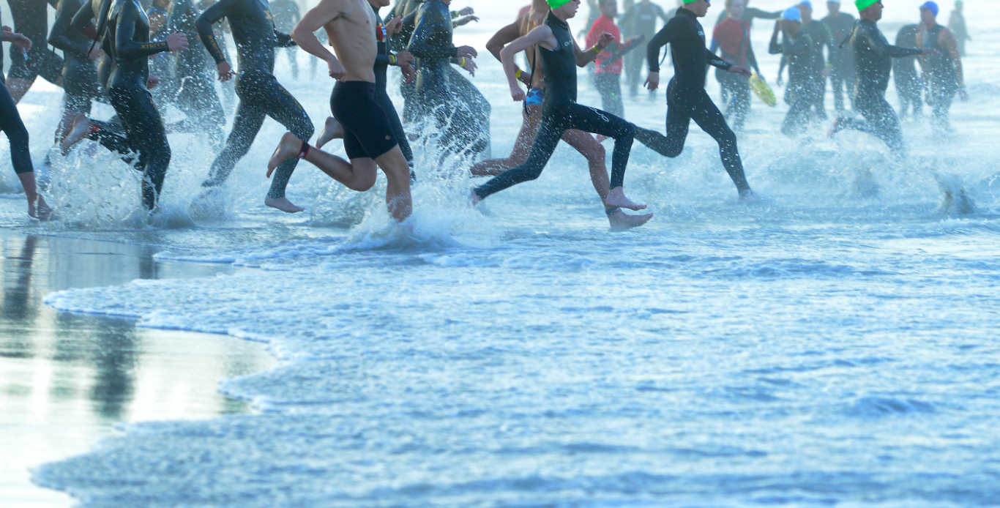

MITJA MARATÓ
CIUTAT DE BERGA
Berga, Catalunya | Barcelona
21.1 km en 1 h. 17 min.
4TA CURSA DE
MUNTANYA DE MANRESA
Montaña en Manresa, Catalunya | Barcelona
17.1 km en 1 h. 31 min. 29 s.
URBANS DE MANRESA
Manresa, Catalunya | Barcelona
10 km en 34 min. 24 s.
CURSA PONT DE VILOMARA
MEMORIAL ALCALDE EVARISTO
Tierra en El Pont de Vilomara
Catalunya | Barcelona
10 km en 35 min. 40 s.
CURSA ATLÈTICA
POPULAR DE TONA
Tona, Catalunya | Barcelona
6 km en 19 min. 11 s.